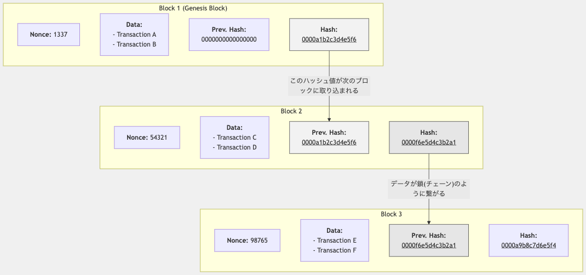
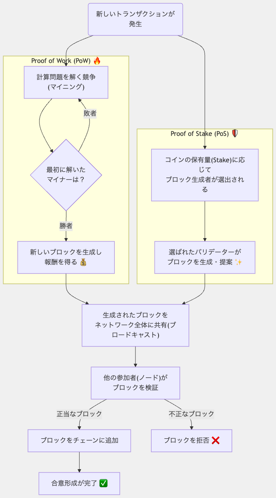

ブロックチェーン技術と暗号通貨は、デジタル経済の新たな基盤として急速に発展しています。 特に暗号通貨の安全な保管と管理を担うウォレット（財布）は、この新しい金融システムにおいて重要な役割を果たしています。
このページでは、ブロックチェーン技術の基本から暗号通貨ウォレットの種類、そして安全な管理方法まで詳しく解説します。 暗号通貨を安全に保管し、取引するための知識を身につけることができます。
ブロックチェーンは、データを「ブロック」と呼ばれる単位で保存し、暗号技術によって連結した分散型台帳技術です。 各ブロックは前のブロックのハッシュ値を含むため、一度記録されたデータは改ざんが極めて困難になります。
この技術の最大の特徴は、中央管理者を必要とせず、参加者全員でデータを共有・検証する「分散型」の仕組みにあります。 これにより、透明性が高く、耐障害性に優れたシステムを実現しています。
ブロックチェーンの各ブロックは主に以下の要素で構成されています：
ブロックヘッダーには、ブロックを識別し検証するための重要なメタデータが含まれています。主な構成要素は以下の通りです：
ブロックの本体部分であり、そのブロックに記録される全ての取引情報が含まれています：
ブロック全体のデータから生成される固有の識別子であり、ブロックチェーンのセキュリティにおいて中心的な役割を果たします：
ブロックはチェーン状に連結され、各ブロックは前のブロックを参照することで、データの連続性と整合性を保証しています。

ブロックチェーンネットワークでは、新しいブロックの追加に関して参加者間で合意を形成する必要があります。 これは、分散型システムにおいて全ての参加者が同じブロックチェーンの状態を共有するために不可欠なプロセスです。
ブロックチェーンにおける合意形成は、以下のような基本的なフローで行われます：

ブロックチェーンで使用される主な合意形成メカニズムには以下のようなものがあります：
ビットコインで採用されている最も古く、広く使用されている合意形成メカニズムです。
PoWの高エネルギー消費問題を解決するために開発された、より環境に優しい合意形成メカニズムです。
ブロックチェーンの主要な合意形成メカニズムであるプルーフ・オブ・ワーク（PoW）とプルーフ・オブ・ステーク（PoS）の特徴を比較した表です：
| 比較項目 | プルーフ・オブ・ワーク（PoW） | プルーフ・オブ・ステーク（PoS） |
|---|---|---|
| 基本原理 | 計算能力による競争 | 保有通貨量による選出 |
| 参加者 | マイナー（採掘者） | バリデーター（検証者） |
| 必要リソース | 高性能なコンピュータ、専用ASIC | 保有する暗号通貨（ステーク） |
| エネルギー消費 | 非常に高い（国家レベルの電力消費） | 低い（PoWの約0.01%程度） |
| セキュリティモデル | 51%攻撃には計算能力の過半数が必要 | 攻撃には通貨の過半数所有が必要（経済的に非合理的） |
| スケーラビリティ | 低い（1秒あたり数十取引程度） | 比較的高い（1秒あたり数千取引も可能） |
| 分散化 | マイニングプールへの集中傾向 | 大口保有者（ホエール）への集中リスク |
| 参入障壁 | 高い（高額な設備投資が必要） | 中程度（一定量の通貨保有が必要） |
| 採用例 | ビットコイン（BTC）、ライトコイン（LTC）、モネロ（XMR） | イーサリアム2.0（ETH）、カルダノ（ADA）、ソラナ（SOL） |
上記以外にも、様々な特性や用途に合わせた合意形成メカニズムが開発されています：
これらの合意形成メカニズムは、セキュリティ、スケーラビリティ、分散化のトリレンマ（三つ全てを同時に最適化することが難しい問題）に対して、それぞれ異なるアプローチで解決を試みています。 ブロックチェーンプロジェクトは、その目的や要件に応じて最適な合意形成メカニズムを選択しています。
合意形成プロセスの重要な部分は、生成されたブロックのブロードキャストと検証です。これらは順序立てて行われる連続したプロセスであり、ブロックチェーンの整合性と信頼性を確保するために不可欠です：
以下では、ブロードキャストと検証のプロセスについて詳しく説明します。まず、ブロックチェーンネットワークにおけるブロードキャストの詳細から見ていきましょう。
ブロードキャストとは、ブロックチェーンネットワーク内で情報を全参加者（ノード）に伝播させるプロセスです。 分散型システムであるブロックチェーンでは、このブロードキャスト機能が全てのノードが同じ情報を共有し、 ネットワーク全体で一貫した状態を維持するために不可欠な役割を果たしています。
ブロックチェーンネットワークでは、主に以下の情報がブロードキャストされます：
ブロックチェーンネットワークでのブロードキャストは、主に以下のようなプロセスで行われます：
ブロックチェーンネットワークでは、効率的なブロードキャストを実現するために様々なプロトコルが使用されています：
ブロックチェーンネットワークでのブロードキャストには、以下のような課題があります：
ブロックチェーンの性能向上のため、ブロードキャストプロセスの最適化が常に研究されています：
効率的なブロードキャストメカニズムは、ブロックチェーンネットワークの性能、セキュリティ、分散性のバランスを保つ上で重要な役割を果たしています。 技術の進化に伴い、より高速で効率的なブロードキャスト方法が開発され続けています。
ブロードキャストの次のステップとして、受信したブロックやトランザクションの検証プロセスが行われます。以下では、この検証プロセスについて詳しく説明します。
ブロックチェーンにおける「検証」は、ネットワークの信頼性と整合性を維持するための中核的なプロセスです。 分散型システムでは中央の権威がないため、各参加者（ノード）が独自に検証を行うことで、システム全体の信頼性が担保されています。
ブロックチェーンにおける検証は以下のような重要な役割を果たしています：
ブロックチェーンでは、複数のレベルで検証が行われています：
トランザクションの検証では、以下のような項目が確認されます：
ブロック全体の検証では、以下のような項目が確認されます：
検証プロセスの効率化のために、様々な技術的工夫が実装されています：
ブロックチェーンの検証プロセスには、以下のような課題と対策があります：
検証プロセスはブロックチェーン技術の根幹をなす要素であり、その効率性と堅牢性がブロックチェーンの性能とセキュリティを大きく左右します。 今後のブロックチェーン技術の発展においても、検証メカニズムの改良は重要な研究テーマとなっています。
新たな検証技術として、ゼロ知識証明（Zero-Knowledge Proofs）やSTARKs、SNARKsなどのプライバシー保護と検証効率を両立する技術や、 検証の分散化と効率化を両立させる新しいコンセンサスアルゴリズムの開発が進んでいます。 これらの技術革新により、より高速で安全、そしてプライバシーを保護したブロックチェーンの実現が期待されています。
暗号通貨は、暗号技術を用いて安全性を確保したデジタル通貨です。 中央銀行や政府などの中央機関に依存せず、ブロックチェーン技術を基盤として機能します。
暗号通貨の主な特徴：
現在、数千種類の暗号通貨が存在していますが、代表的なものには以下があります：
暗号通貨ウォレットは、暗号通貨を保管・管理するためのツールです。ただし、一般的な財布とは異なり、暗号通貨自体を物理的に保存するわけではありません。 実際には、ブロックチェーン上の資産にアクセスするための秘密鍵と公開鍵のペアを管理するシステムです。
ウォレットの主な機能：
暗号通貨ウォレットは、その形態や接続性によって以下のように分類されます：
ウォレットのセキュリティは暗号通貨を安全に保管するための最重要事項です。主なセキュリティ機能には以下があります：
セキュリティレベルは一般的に、コールドウォレット＞ノンカストディアルホットウォレット＞カストディアルウォレットの順に高いとされています。
暗号通貨ウォレットの核心は、公開鍵暗号方式に基づく鍵ペアの管理にあります。
この仕組みにより、秘密鍵を持つ人だけが資産を使用でき、公開鍵やアドレスを知っているだけでは資産にアクセスできない安全なシステムが実現しています。
秘密鍵の保管方法は、暗号通貨の安全性を左右する最も重要な要素です。主な保管方法には以下があります：
大量の暗号通貨を保管する場合は、コールドストレージ（オフライン保管）を利用することが推奨されています。
秘密鍵を紛失すると、関連する暗号通貨へのアクセスも永久に失われます。そのため、適切なバックアップと復元方法が不可欠です：
バックアップを作成する際は、物理的な損傷（火災、水害など）や盗難のリスクも考慮する必要があります。また、定期的にバックアップの状態を確認することも重要です。
暗号通貨を安全に管理するためのベストプラクティスを紹介します：
これらの対策を組み合わせることで、暗号通貨の安全性を大幅に向上させることができます。
暗号通貨ウォレットの使用中によく発生する問題とその解決策を紹介します：
問題：秘密鍵やシードフレーズを紛失した場合、関連する暗号通貨へのアクセスも失われます。
解決策：
問題：間違ったアドレスに送金したり、互換性のないネットワークに送金したりすると、資金が失われる可能性があります。
解決策：
問題：偽のウォレットサイトや詐欺アプリによって秘密鍵が盗まれる可能性があります。
解決策：
問題：クリップボード操作を監視し、暗号通貨アドレスを置き換えるマルウェアが存在します。
解決策：
問題：暗号通貨取引所がハッキングされ、保管している資産が盗まれる可能性があります。
解決策：
これらの問題に事前に備えることで、暗号通貨の安全な管理が可能になります。 問題が発生した場合は、冷静に対処し、必要に応じて専門家のアドバイスを求めることも重要です。